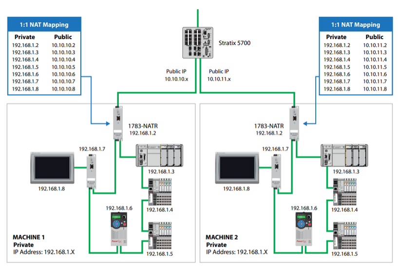

A NAT device is useful when you find that integrating Programmable Logic Controllers (PLCs) into broader enterprise networks presents challenges, particularly concerning IP address management and network security.
Any production monitoring system or SCADA depends on communicating between different machines, so this comes up often. Here's how to solve it with a NAT device.

Why You May Need a NAT Device for Your OT Network
Network Address Translation (NAT) devices offer solutions to these challenges by:
- Facilitating seamless integration without the need to reconfigure existing IP addresses
- Effectively segregating Operational Technology (OT) from Information Technology (IT) systems.
Preserving Existing IP Address Schemes
Manufacturers often standardize IP address configurations across multiple machines for consistency and ease of deployment. Without NAT, integrating these machines into a plant-wide network would require reassigning unique IP addresses to each device to prevent conflicts—a process that is both time-consuming and error-prone.
NAT devices translate private IP addresses within the machine network to unique public IP addresses on the plant network, allowing the original IP configurations to remain unchanged.
Segregating OT from IT Networks
Separating OT and IT networks is crucial for enhancing security and ensuring reliable operations. By using NAT devices, the OT network remains isolated, minimizing exposure to potential cyber threats from the IT environment. This separation not only fortifies security but also allows for tailored management of each network segment, accommodating their distinct operational requirements.
In summary, utilizing NAT devices enables organizations to integrate PLC networks into larger infrastructures without the complexities of IP reconfiguration and supports the critical separation of OT and IT systems, thereby enhancing both operational efficiency and security.
How to Configure the Allen-Bradley 1783-NATR (NAT)
Understanding the 1783-NATR
Functionality: Performs Network Address Translation (NAT) to allow communication across different networks.
Features:
- It can translate up to 32 addresses.
- Supports 10 communication ports by default:
- ICMP (ping)
- HTTP (port 80)
- HTTPS (port 443)
- Port 222 (Allen-Bradley I/O traffic)
- Port 44818 (Class 3 communication for Allen-Bradley devices)
- Allows up to 5 additional custom ports.
Physical Setup
Power Up:
- Plug the NATR module into a power source.
- Connect your PLC to a private port on the module.
- Connect your laptop to another private port on the module.
Verify DIP Switch Settings:
- Default DIP switch settings: OFF-ON-OFF.
- This assigns a temporary IP address to the NATR: 192.168.1.1.
Laptop Configuration
Ensure your laptop is on the same network as the NATR:
- Open the Ethernet Adapter Properties on your laptop.
- Assign a static IP (e.g., 192.168.1.10) and subnet mask (255.255.255.0) in the same range.
Access the NATR Web Interface
Open a web browser and enter http://192.168.1.1.
Default credentials:
- Username: admin
- Password: Serial number (found on the side of the device or web interface).
On the first login:
- Change the password to a new one.
- Save changes.
Public IP Configuration
Navigate to Configuration > Public Network:
- Enter the desired public IP address (e.g., 10.10.10.2).
- Click Apply Changes.
- Acknowledge any warnings about disruptions.
Private IP Configuration
Navigate to Configuration > Private Network:
- Change the private IP address, if necessary (e.g., 192.168.1.2).
- Click Apply Changes.
Note: The gateway address of connected devices (e.g., PLC) must match the NATR private IP.
Network Address Translation Setup
Verify that NAT Enable is turned on (default setting).
Add a translation rule:
- Go to Add New Rule:
- Public IP: Enter the desired public-facing IP (e.g., 10.10.10.11).
- Private IP: Enter the current IP of the device (e.g., 192.168.1.11).
- Provide a description (e.g., "PLC").
- Ensure the Enabled checkbox is checked.
- Save the rule.
Verify Connections
Restart the NATR module to apply configuration changes:
- Power cycle the device.
Ensure the status indicators show the following:
- Green OK status light.
- Active link lights for all connected ports.
Validate the PLC's gateway settings:
- Update the PLC's gateway to match the NATR private IP (e.g., 192.168.1.2).
- Save and apply the changes.
Testing Communication
Switch your PC to the public network:
- Change your laptop's IP to be in the public network range (e.g., 10.10.10.x).
Plug the laptop into the public port on the NATR.
Use a tool like FactoryTalk Linx to verify:
- Public IP and private IP mappings are visible.
- Confirm communication between the PLC and external devices.
Troubleshooting Tips
- If the password is forgotten, use the DIP switches to reset the NATR to factory defaults.
- Ensure the correct gateway is assigned to all devices on the private network.
- Use the ping command to verify connectivity at various stages.